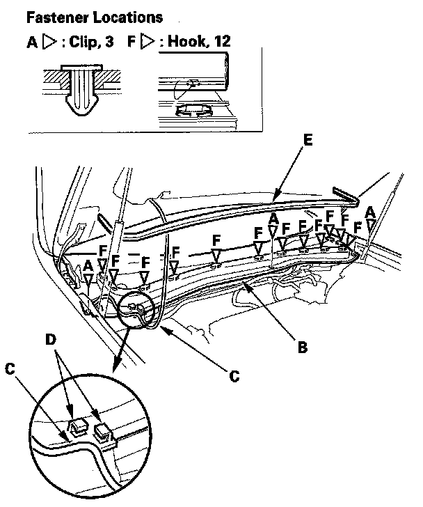
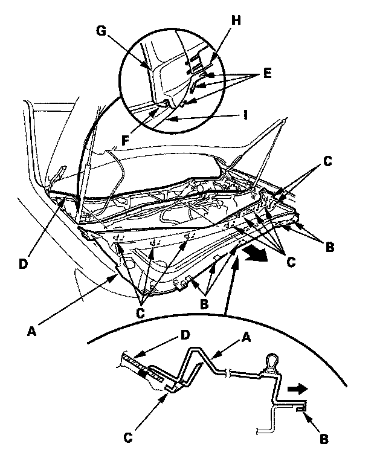

Cowl Moulding / Trim: Service and Repair
Cowl Cover ReplacementSpecial Tools Required
KTC trim tool set SOJATP2014 *
* Available through the American Honda Tool and Equipment Program
NOTE:
- Take care not to scratch the cowl cover and body.
- Use the appropriate tool from the KTC trim tool set to avoid damage when prying components.
1. Remove the windshield wiper arms.

2. Using a trim tool, remove the clips (A) from the cowl cover (B).
3. Release the windshield wiper washer tube (C) from the hooks (D).
4. If necessary, remove the hood rear seal (E) from all of the hooks (F).

5. Pull the cowl cover (A) forward to release the hooks (B, C) of it from the windshield (D) and body. From both hood hinge portions, release the hooks (E, F) of the hood hinge cover (G) from the front fender (H) and the roof molding (I).
6. Remove the cowl cover.
7. Install the cover in the reverse order of removal, and note these items:
- If the clips are damaged or stress-whitened, replace them with new ones.
- Push the clips into place securely.